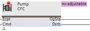
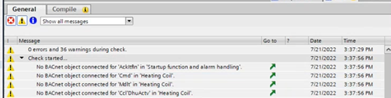
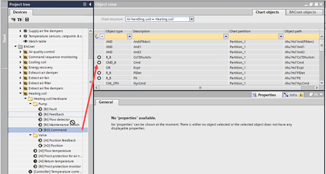
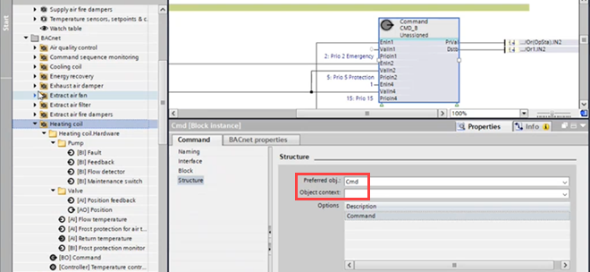

将 BACnet 对象分配给受保护模块
- The Programming editor is open.
- The selected plant is created with nested modules.
- A know-how protected module of the same family is used and replaces another one (a red key icon displays on the module).

- Run the Check
 function.
function. - A list of unassigned BACnet objects is displayed in the General tab.

- Select the Object view area and select Chart objects.
- From the Chart structure drop-down list, select the module, for example, Heating coil.
- From the Project tree, drag the BACnet object to the corresponding chart object.

Info: If the replaced object has the same functionality as the original one, an auto-connect assigns the object automatically.
The auto-connect functionality depends on the library information in the Preferred obj (Cmd) and Object context (pump) fields. - Delete unused objects.